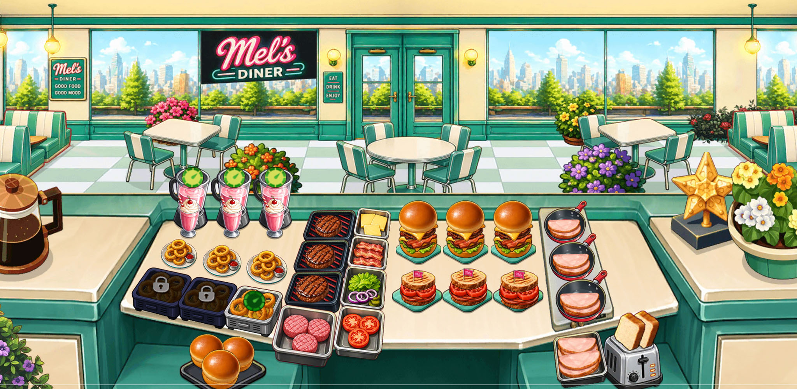

A new destination has arrived in Cooking Mastery. Players can now travel to Hollywood and take on a brand-new restaurant inspired by the flavors and atmosphere of the American West Coast.
Hollywood is the 16th world added to Cooking Mastery, continuing the game's journey through restaurants and destinations from around the world.
Welcome to Hollywood
The new restaurant introduces a menu packed with classic diner favorites, including double bacon burgers, club sandwiches, crispy onion rings and milkshakes.
Players will work with a new selection of ingredients, including burger buns, patties, cheese, bacon, lettuce, tomatoes and turkey, while upgrading their kitchen and serving increasingly demanding customers.
16 worlds and counting
With Hollywood joining the game, Cooking Mastery now features 16 worlds for players to discover, each offering its own restaurants, dishes and cooking challenges.
We're continuing to expand Cooking Mastery with new content and look forward to taking players to even more destinations in the future.

About Meow Studios
Meow Studios is an independent game developer based in Romania, creating casual games for mobile and desktop platforms.
Visit meowstudios.org to learn more about our games.